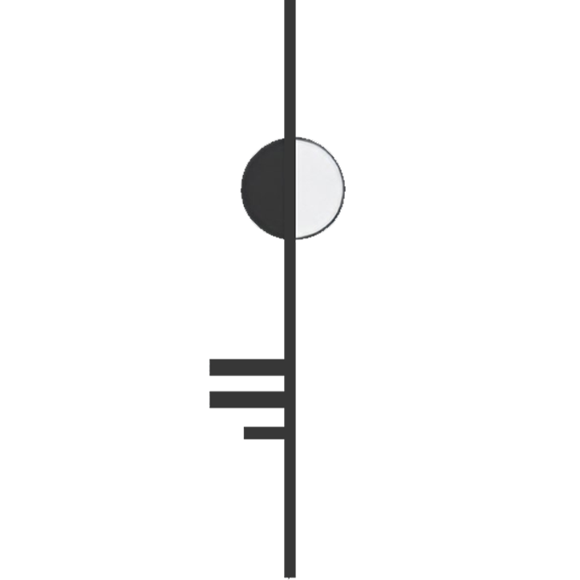

Chapter I
Tea Spirits
Small beings with huge personality. Pour tea over them and the clay matures over time.
Collectible characters with tangible stories. Handcrafted with zero molds or copies.
Small beings with huge personality. Pour tea over them and the clay matures over time.
Creatures born from dark, decadent fantasy — inhabitants of forgotten realms.
Contemporary buddies shaped by modern cities. Slightly broken, slightly surreal.
Small, portable beings: minimal in form, maximal in personality. Pocket-sized.
Words from those who have welcomed a strange companion into their home.
Absolutely gorgeous piece very well crafted and packed, amazing communication. Extra tea coin and little dragon extra are a very cute addition, thank you!Etsy Buyer
Fantastic addition to my tea set. Svetlana's customer service was professional and friendly. Shipping was quick and my package arrived safe and sound.Adam
My tea pet was shipped super fast, it's my first and I couldn't have picked a better tea pet, Kovu is amazing! The packaging was super nice too!Micheale
What you see here is only a small corner of the menagerie. The rest of the creatures, every odd soul still waiting for its human, have wandered over to our Etsy shop. That is where they find their way home, with secure checkout and shipping.
*You will be redirected to our Etsy shop to complete the adoption.

I believe that in a world rapidly spinning into digital abstraction, we desperately need a sense of grounding. We need something with physical weight, rich texture, and a distinct heartbeat. That is why I create these strange companions.
Every entity at Dark Saga Art is brought to life by hand using clay, textiles, and mixed media. There are no molds and no replications. My characters can be odd, whimsical, cute, or arrogant, but they are always deeply authentic.
Dark Saga Art is for those who appreciate beauty with a sharp edge, and believe that surrounding yourself with unique objects helps your inner world unfold. If that is you, welcome!
It seems you've found your crowd.